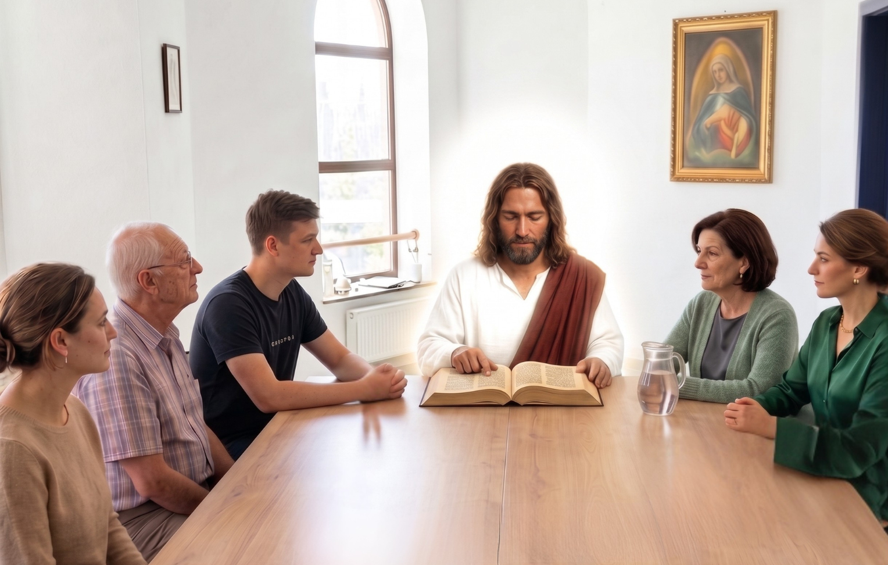

Wspólnota katolicka
Czytamy Słowo.
Zostajemy na rozmowę.
Spotykamy się w czwartki: modlitwa, fragment Pisma i zwyczajna rozmowa przy stole. Możesz przyjść sam.

Razem łatwiej słuchać Boga
Jest nas kilkanaście osób: studenci, małżeństwa, single, ludzie po czterdziestce. Część jest tu od lat, część przyszła miesiąc temu.
Nie trzeba mieć wiedzy teologicznej ani gotowych odpowiedzi. Wystarczy, że chcesz posłuchać i że zostaniesz na herbatę po spotkaniu.
Kiedy komuś dzieje się coś trudnego, reszta o tym wie. Modlimy się za siebie nawzajem, czasem pomagamy w przeprowadzce albo po prostu odbieramy telefon o późnej porze.
Jak wygląda czwartkowy wieczór
Dwie godziny, stały rytm. Jeśli przyjdziesz pierwszy raz, nikt nie poprosi cię o zabranie głosu.
Modlitwa i uwielbienie
Zaczynamy śpiewem i wspólną modlitwą. Nie trzeba znać słów ani śpiewać głośno.
Pismo Święte
Czytamy fragment, ktoś dzieli się krótkim komentarzem, potem zostajemy z tym w ciszy.
Rozmowa w kręgu
Mówimy o tym, co usłyszeliśmy i co dzieje się u nas w tygodniu. Możesz tylko słuchać.
Herbata
Zostajemy dłużej, bez agendy. Tu zwykle zaczynają się przyjaźnie.
Gdzie są dwaj albo trzej zebrani w imię moje, tam jestem pośród nich.Mt 18,20
Kurs Alpha
Masz pytania o wiarę? Przyjdź i pytaj.
Alpha to cykl spotkań o podstawach wiary chrześcijańskiej. Każde zaczyna się od kolacji, potem jest krótki wykład i rozmowa w małej grupie. Nie trzeba mieć przygotowania ani deklarować, w co się wierzy.
Pytania w rodzaju „czy Bóg w ogóle istnieje” są tu na miejscu. Nikt nie będzie cię przekonywał na siłę.
Życie wspólnoty
Zdjęcia i nagrania z modlitwy, wyjazdów i zwykłych czwartków.
Może to jest miejsce, którego szukasz
Nie musisz nic wiedzieć ani nikogo znać. Przyjdź z pytaniami, z ciekawością albo po prostu z potrzebą spotkania drugiego człowieka.
Albo napisz na Facebooku. Odpisujemy zwykle w ciągu dnia.